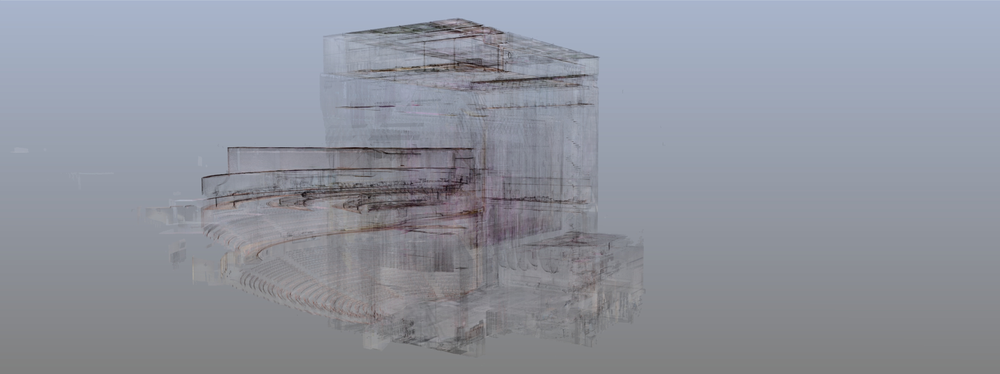

EIPC (Empathy in Point Clouds) had the privilege of partnering with the University of Michigan Center for Academic Innovation and the School of Music, Theatre & Dance on a transformative project to digitally capture the Power Center for Performing Arts. The goal was to create an immersive and historically rich virtual environment for an emeritus professor’s History of Theater course, utilizing the Center’s state-of-the-art LED immersive stage.
Our team was tasked with carefully scanning the intricate details of the Power Center’s architectural and performance spaces, including the stage, seating areas, lighting systems, and distinctive design elements. Using advanced 3D scanning techniques, we produced a high-resolution point cloud and 3D model that faithfully represents the venue’s visual and spatial essence.
At EIPC, we approach every project with a deep respect for both the technology and the story it helps to tell. Through this collaboration, we were able to merge our expertise in 3D scanning with the University’s commitment to innovative education, creating a lasting resource that blends tradition and technology in a dynamic, educational setting.